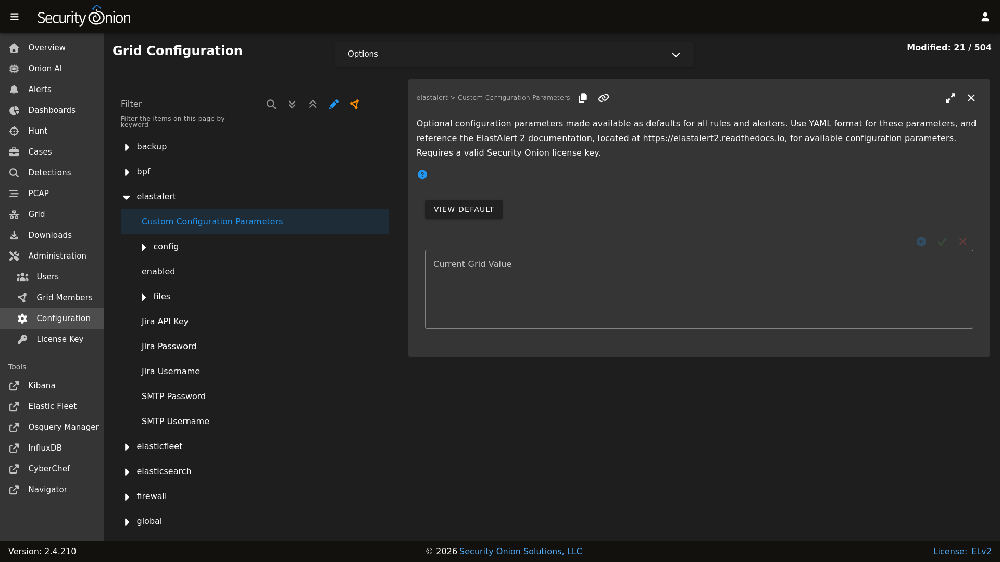
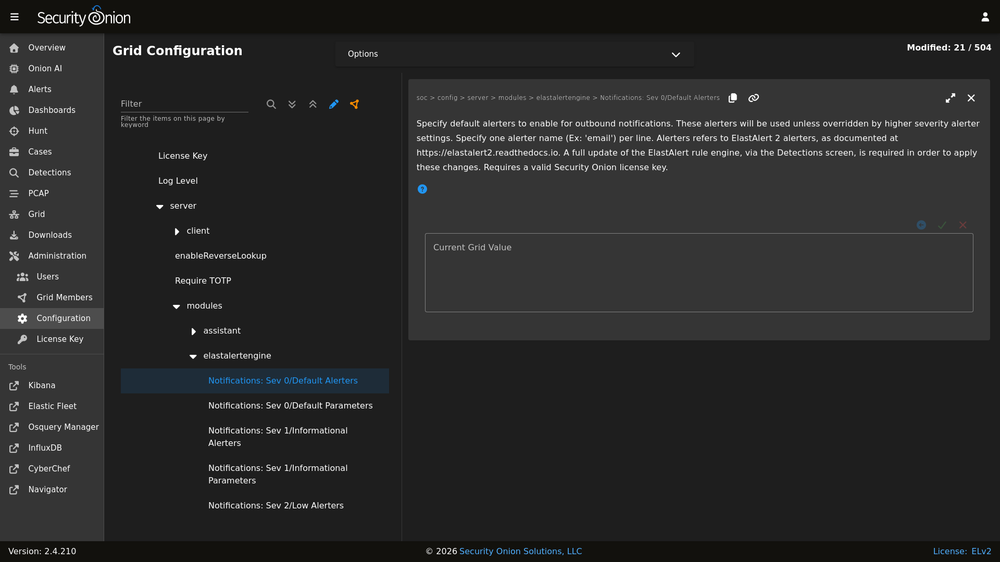
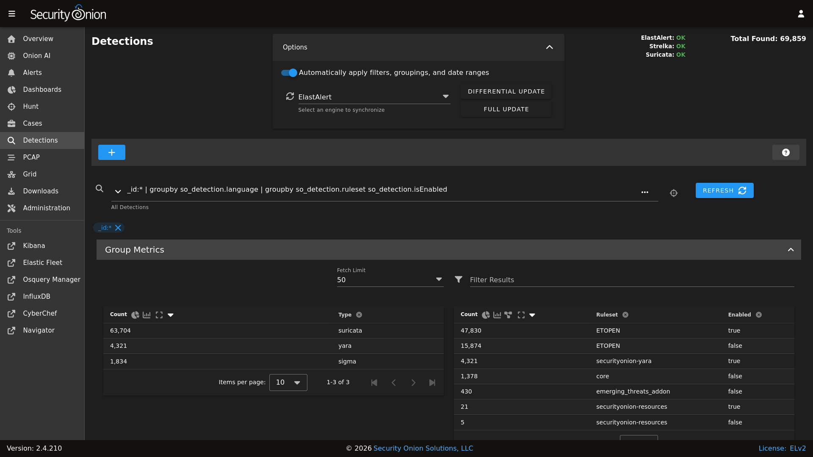

Notifications
Note
This is an enterprise-level feature of Security Onion. Contact Security Onion Solutions, LLC via our website at https://securityonion.com/pro for more information about purchasing a Security Onion Pro license to enable this feature.
The Detections module, specifically Sigma rules, can be enabled to send outbound notifications upon an alert being created. By default, no outbound notifications are enabled in a Security Onion installation. However, with the Pro license applied to a grid, notifications can be quickly configured via the Configuration screen.
Configuration
Configuring notifications involves adjusting configuration in two areas:
ElastAlert 2 Alerters
SOC Detections
ElastAlert 2 Alerters
ElastAlert 2 includes a large number of alerters that can reach out to remote systems to deliver notifications. As each alerter supports a unique protocol the alerter requires its own set of supporting parameters in order for the alerter to know how to reach out to the remote endpoint. For example, to send a notification to a Slack channel, a webhook URL must be provided.
Navigate to the Administration -> Configuration screen. Next, locate the elastalert settings.
{kind=link}

Notice there are special settings for Jira and SMTP notifications. These are unique in that ElastAlert 2 requires those two alerters to read their credentials from a file. Security Onion has simplified this process by presenting these Configuration fields to enter the optional credential data, and the backend process will take care of generating the required files for ElastAlert 2.
The files subtree includes a list of several file settings, which allows for populating the contents of certain files that the alerters can optionally utilize. Most alerters use the files for specifying a custom Certificate Authority, so that ElastAlert 2 can securely and confidently connect to remote servers that may be using custom SSL/TLS certificates. Again, Security Onion’s backend process will handle generating these files from the supplied configuration data provided in the user interface.
Next, the soc > config > server > modules > elastalertengine > Notifications: Sev 0/Default Parameters setting is used to customize each alerter’s own parameters. As ElastAlert 2 already provides detailed documentation on the required parameters for each alerter, this documentation will not cover the same information, but instead will focus on two popular alerters: Slack and SMTP.
Note
Reference the alerter parameters at https://elastalert2.readthedocs.io/en/latest/alerts.html#alert-types.
Slack
To have Sigma rules send notifications to Slack, add the following line to the soc > config > server > modules > elastalertengine > Notifications: Sev 0/Default Parameters configuration setting:
slack_webhook_url: "https://hooks.slack.com/services/YOUR_WEBHOOK_URI"
Email (SMTP)
To have Sigma rules send notifications via email, add the following lines to the soc > config > server > modules > elastalertengine > Notifications: Sev 0/Default Parameters configuration setting:
email: youremail@yourcompany.com
smtp_host: "your_company_smtp_server"
from_addr: "elastalert@yourcompany.com"
If the SMTP server requires authentication make sure the special SMTP Username and SMTP Password configuration settings are also specified.
SOC Detections
Once the alerter parameters are configured, as described above, the next step is to configure Detections in order to activate one or more notification alerters.
Navigate to the Administration -> Configuration screen. Next, locate the soc > config > server > modules > elastalertengine settings.
In the Notifications: Sev 0/Default Alerters configuration setting, add the name of each alerter that should be activated, one alerter name per line. For example, to add both slack and email:
slack
email
{kind=link}

Important! After activating (or removing) an alerter from this setting, the ElastAlert 2 engine must be fully updated. This can be done via the Detections screen, under the Options dropdown.
{kind=link}

Severity-Based Notifications
The instructions above setup the default notification settings, for all outbound notifications. However, as of Security Onion 2.4.100, notification settings can be customized for higher level severities. Severities are specified in Sigma Detections.
Severity levels progress as follows, starting with the lowest, least significant severity:
Unknown Severity
Informational Severity
Low Severity
Medium Severity
High Severity
Critical Severity
If notification settings are not specified for a particular severity level then it will use whatever settings are specified at the next lower severity. If that severity is also not specified, then it continues looking for lower severity settings.
Note
Higher severity levels do not inherit parameters or alerters from lower severities. Consequently, if email is specified as the default (Severity 0) alerter, and it’s desired to have both email and slack notifications sent with High/Sev 4 severity or above, then both email and slack will need to be specified for the Notifications: Sev 4/Default Alerters setting, one per line. This same principle applies to the parameters, which are also not inherited. In order to inherit default parameters across all severities, the parameters can be specified in the elastalert > Custom Configuration Parameters setting.
User-Defined Notifications
As of Security Onion 2.4.100, individual Sigma detections can be tagged to change the detection’s alerting behavior. The tags are set inside the detection source. Tag details are defined below:
so.notification: When this tag is present inside of a Sigma tag list, the detection will only perform outbound notifications. It will not add an alert to the SOC Alerts screen.so.alerters.customAlerters: When this tag is present inside of a Sigma tag list, the detection will perform notifications for an alternate set of ElastAlert 2 alerters. More information on how to choose these alerters is provided below.so.params.customAlertersParams: When this tag is present inside of a Sigma tag list, and when the above tag is also included, then an alternate set of custom parameters will be applied to the ElastAlert 2 alerters.
To customize the alerters and parameters to use when these tags are specified in a Sigma detection, navigate to the Configuration screen. Find the soc > config > server > modules > elastalertengine > additionalUserDefinedNotifications > customAlerters setting and add the custom alerters, one per line, similar to what is done for the Severity-Based notifications above. Similarly, find the sibling setting to define custom alerter parameters: soc > config > server > modules > elastalertengine > additionalUserDefinedNotifications > customAlertersParams.
Note
User-defined alerters will override severity-based alerters, provided the user-defined alerters are properly configured. If the Sigma tags specify custom alerters but the corresponding setting does not exist in the Configuration then the severity-based notifications will continue to be used.
To create additional user-defined alerter configurations, enable Advanced mode and navigate to the same customAlerters and customAlertersParams settings mentioned above. With Advanced mode enabled there will be a “Create Duplicate” button that allows for duplicating these settings. Follow the on-screen instructions to create the duplicate settings. Then, to make use of these new settings, in the Sigma tag list replace the so.alerters.customAlerters tag suffix with the name (case-sensitive) of the duplicated setting. For example, if the duplicated settings are named SysAdminAlerters and SysAdminParams then the two tags to specify in the Sigma detection source are so.alerters.SysAdminAlerters and so.params.SysAdminParams. Only one user-defined alerters and parameters setting will be used if multiple tags match the so.alerters. and so.params. prefixes. In other words, attempting to specify multiple user-defined alerters within a single Sigma detection will result in an ambiguous outcome.
Example:
title: Security Onion - Grid Node Login Failure (SSH) (copy)
id: 0c880a39-f2cc-4e80-af26-eb08e2fe4b0a
status: experimental
description: Detects when a user fails to login to a grid node via SSH. Review associated logs for username and source IP.
author: Security Onion Solutions
date: 2024/08/27
logsource:
product: linux
service: auth
detection:
selection:
event.outcome: failure
process.name: sshd
tags|contains: so-grid-node
filter:
system.auth.ssh.method: '*'
condition: selection and not filter
tags:
- so.alerters.SysAdminAlerters
- so.params.SysAdminParams
- so.notification
falsepositives:
- none
level: high
license: Elastic-2.0
Notification Formatting
There are a wide range of capabilities to format notification messages to the various endpoints supported by ElastAlert 2. Refer to the ElastAlert 2 documentation for all available formatting parameters: https://elastalert2.readthedocs.io/en/latest/alerts.html#alert-subject
Below is an example of customizing the notification message. This format is compatible with most of the ElastAlert 2 alerters but may only work with specific connection-related alerts, due to it referencing specific connection fields. To use, paste these settings into the desired configuration alerter params field, as discussed earlier in this section. Change the hostname as necessary in the included URLs.
alert_subject: "Alert: {0} {1}"
alert_subject_args:
- rule.name
- "@timestamp"
alert_text: |
Alert details are available in Security Onion Console: https://manager/#/hunt?q=log.id.uid%3A{0}&rt=1&rtu=days
Source: {1}:{2}
Destination: {3}:{4}
Investigate the network community ID: https://manager/#/hunt?q=network.community_id%3A"{5}"&rt=1&rtu=days
alert_text_type: alert_text_only
alert_text_args: ["log.id.uid", "source.ip", "source.port", "destination.ip", "destination.port", "network.community_id"]
Applying Changes
In order for alerters and parameters to take effect, multiple synchronizations must occur. These are done automatically on a set schedule, but it is possible to force them earlier, if needed. Specifically, the following must take place for the changes to be applied to the ElastAlert 2 rules:
Changes are saved in Configuration screen by the SOC Admin.
Configuration is synchronized across the grid. To manually force a grid sync, go to the Configuration screen, open the
Optionsdropdown at the top, and clickSynchronize.Sigma Detection edits are saved, such as adding the user-defined notification tags, or changing the severity.
Sigma Detections are synchronized. Click Full Synchronize for ElastAlert rules, or to force a single detection sync go to the Detection Source tab, make an edit to the source, and click
Update.
Note
It may take a minute or two for the ElastAlert 2 process to detect the changed rules, and then another few minutes for ElastAlert 2 to run that rule.